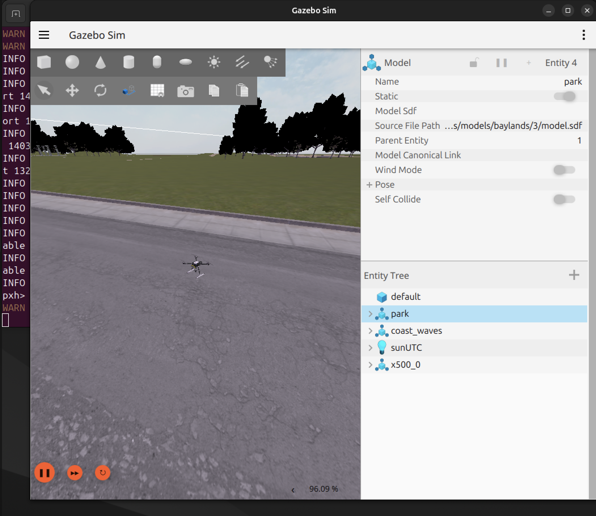
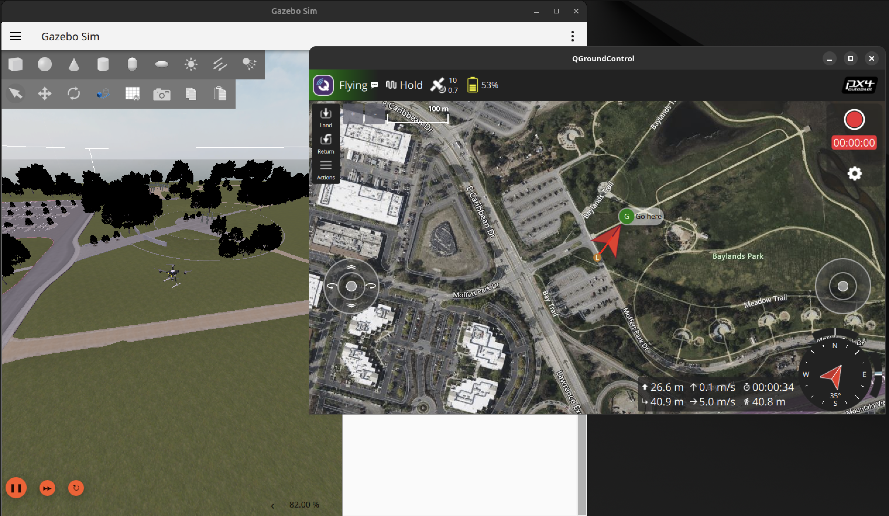
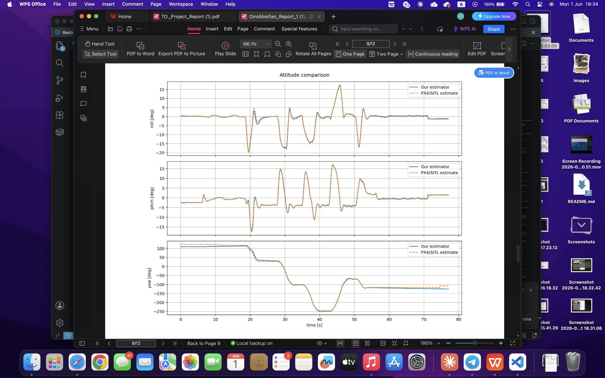
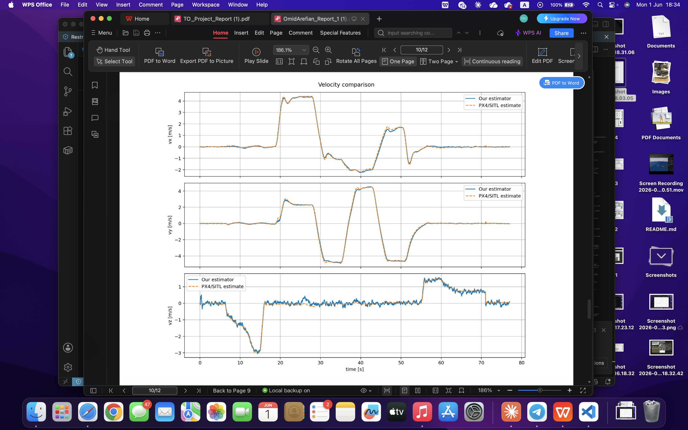
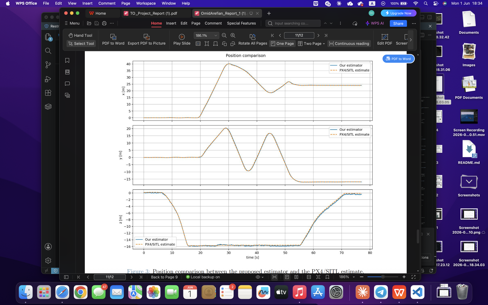

Sensor Fusion · Kalman Filtering · Autonomous UAV Navigation
Design of a Multiplicative EKF
for UAV State Estimation
An independent Multiplicative Extended Kalman Filter (MEKF) designed to reconstruct the full pose of a drone — position, velocity, attitude, and sensor biases — from raw IMU, GPS, barometer, and magnetometer data. The filter runs entirely independently of the onboard autopilot and is validated against PX4 SITL in Python. Currently being extended for real hardware at SunCubes.
Overview
Project Overview
A fully independent estimator that reconstructs drone pose from raw sensor data, without relying on any autopilot internal output.
Motivation
Commercial autopilots such as PX4 provide high-quality onboard state estimates, but these are not suitable as a standalone research estimator — the internal filter details are opaque and the output mixes sensor fusion with control feedback. This project implements an independent MEKF that consumes only raw MAVLink sensor streams, propagates the drone state from inertial measurements, and corrects it with GPS, barometer, and magnetometer updates.
The PX4 onboard EKF2 estimates are logged in parallel and used only as a comparison reference for RMSE evaluation. They do not feed into the filter in any way.
State Vector
The filter maintains a 20-dimensional nominal state and a 19-dimensional error state. The quaternion contributes only 3 DOF via the multiplicative error \(\delta\boldsymbol{\theta}\), not 4, which preserves the unit-norm constraint on \(\mathbf{SO}(3)\) without explicit re-normalisation in the covariance equations:
Architecture
Estimator Architecture
The MEKF follows the standard predict–correct cycle. The IMU drives high-rate prediction; GPS, barometer, and magnetometer provide corrections at lower rates.
IMU Prediction
At every IMU sample, bias-corrected gyroscope and accelerometer readings propagate quaternion, velocity, and position:
GPS + Baro Update
Standard EKF correction applied whenever GPS or barometer data arrives. The generic update equations are:
Magnetometer Update
Corrects yaw and magnetometer bias via a normalised horizontal-vector update and a separate z-channel update. Norm and heading gates reject distorted measurements:

PX4 SITL Simulation Environment
The validation environment runs the full PX4 flight stack inside Gazebo Sim.
The x500 quadrotor is loaded into the Baylands park outdoor scene. All MAVLink
streams are exposed over UDP: the Python MEKF reads raw sensor data via
pymavlink
while QGroundControl connects simultaneously for flight monitoring.
PX4's EKF2 estimates are logged only for comparison.
Sensors
Coordinate Frames & Sensor Streams
Two coordinate frames and five MAVLink streams, split into estimation inputs and comparison-only references.
Coordinate Frames
All position and velocity states are represented in the local NED (North-East-Down) navigation frame, with the origin fixed at the first valid GPS fix. The body frame is attached to the drone; IMU and magnetometer measurements arrive in this frame. The attitude quaternion provides the rotation:
GPS latitude/longitude/altitude are converted to local NED on arrival using the first valid GPS sample as origin. Altitude maps to \(-p_D\) in NED convention.
MAVLink Streams
Propagation
State Propagation Model
The prediction step integrates the full nonlinear dynamics at IMU rate, then propagates the error-state covariance through the linearised transition Jacobian.
Nominal State Propagation
At each IMU step the estimated biases are subtracted, the corrected specific force is rotated into NED and added to gravity, and the resulting acceleration drives Euler integration. The quaternion updates multiplicatively:
Biases are modelled as random walks with zero nominal dynamics. Only their covariance entries grow with the corresponding process noise during prediction.
Covariance Propagation
The \(19 \times 19\) error-state covariance is propagated through the linearised error-state transition matrix \(F_k\), computed numerically using boxplus (\(\boxplus\)) and boxminus (\(\boxminus\)) operations on the \(\mathbf{SO}(3)\) manifold:
\(Q_k\) is the discrete process-noise covariance, tuned to reflect IMU noise spectral density and bias instability. The error-state formulation keeps the quaternion unit-norm constraint \(\lVert\mathbf{q}\rVert = 1\) satisfied at every step without explicit re-normalisation in the covariance equations.
Measurement Updates
Sensor Fusion Logic
Five separate update channels handle GPS position, GPS velocity, barometer altitude, magnetometer horizontal vector, and magnetometer z-component.
GPS Position Update
GPS position directly observes the position state with a linear measurement model:
GPS Horizontal Velocity Update
When ground speed \(s^{gps}\) and course angle \(\chi^{gps}\) are available, horizontal NED velocity components are constructed and used as an additional correction. A chi-squared gate rejects measurements with excessive innovation:
Barometer Update
A scalar correction for the vertical channel. The barometer bias \(b_b\) absorbs any constant pressure-to-altitude offset, preventing the vertical position state from being corrupted by systematic sensor error:
Magnetometer Updates
Two channels jointly constrain yaw and magnetometer bias. A norm gate and a heading gate reject measurements with suspected magnetic disturbances:
Gating on both the magnetic norm and the heading error prevents large yaw jumps caused by disturbances near metallic structures or motor wiring.
Results
Validation Results
The MEKF was validated in PX4 SITL across a full 80-second flight covering takeoff, aggressive lateral and vertical manoeuvres, and landing. All outputs are compared against PX4's onboard EKF2 reference estimates.

Attitude Comparison — Roll, Pitch, Yaw
The MEKF attitude (solid blue) tracks the PX4/SITL reference (orange dashed) very closely for roll and pitch throughout the entire flight. The yaw channel shows a slowly varying offset during the most aggressive manoeuvres between 20–50 s — expected given that yaw is corrected only by the magnetometer. The filter recovers correctly once the manoeuvre ends.

Velocity Comparison — \(v_x,\; v_y,\; v_z\)
Horizontal velocity estimates match the PX4 reference almost exactly across the full flight envelope, including peak velocities above 4 m/s. Vertical velocity \(v_z\) shows slightly more noise than the PX4 reference due to the barometer update rate and the absence of a dedicated vertical-velocity sensor, but the trend and magnitude are well captured throughout.

Position Comparison — \(x,\; y,\; z\)
Position in all three axes remains tightly coupled to the PX4 reference throughout the flight, including during the largest displacements of roughly 40 m in the \(x\)-direction and \(-15\) m in altitude. The close agreement demonstrates that GPS and barometer updates effectively prevent inertial drift over the full 80-second flight duration.
RMSE Summary
Root-mean-square errors computed over the full flight log against the PX4/SITL reference. Position errors are sub-23 cm in all axes; roll and pitch are below 0.4°. Yaw shows the largest error, consistent with magnetometer-only heading correction.
| Quantity | RMSE | Unit | Assessment |
|---|---|---|---|
| Position \(x\) | 0.1404 | m | Excellent — sub-15 cm |
| Position \(y\) | 0.2265 | m | Good — sub-23 cm |
| Position \(z\) | 0.1895 | m | Good — sub-19 cm |
| Velocity \(v_x\) | 0.0702 | m/s | Excellent |
| Velocity \(v_y\) | 0.1000 | m/s | Excellent |
| Velocity \(v_z\) | 0.1015 | m/s | Good |
| Roll | 0.3825 | deg | Excellent |
| Pitch | 0.2445 | deg | Excellent |
| Yaw | 6.7576 | deg | Mag-limited |
The yaw RMSE of 6.76° reflects the inherent limitation of single-magnetometer heading estimation. A dual-antenna GPS heading source would eliminate this dominant error term and is planned for the real-hardware extension.
Ongoing Work
Extension to a Real Drone
The SITL-validated estimator is now being adapted for deployment on physical hardware in collaboration with SunCubes.
Key Challenges: SITL → Real Hardware
- IMU noise: Real MEMS IMUs exhibit vibration aliasing, temperature-dependent bias drift, and correlated noise requiring characterisation from static and hover logs.
- GPS quality: Multipath, HDOP variation, and latency jitter make position and velocity innovation gating more critical.
- Magnetometer disturbances: Motor currents and ESC switching create magnetic interference far stronger than in simulation.
- Timing: Real MAVLink streams arrive with variable latency; explicit timestamp alignment between sensors is required.
Planned Improvements
- Empirical noise covariance identification from static and hover flight logs.
- Adaptive measurement gating based on GPS fix quality and HDOP.
- Vibration pre-filtering on the accelerometer channel, tuned to rotor harmonics.
- Soft magnetic calibration to reduce motor-current-induced heading errors.
- Dual-antenna GPS heading source to replace magnetometer-only yaw correction and eliminate the dominant RMSE term.
- Federated Kalman Filter architecture to fuse laser-based range measurements with the MEKF pose-estimation pipeline.
The SITL RMSE values serve as a regression baseline: any change that degrades performance below the table values above is rejected before being tested on hardware.